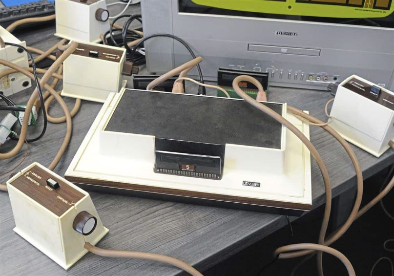
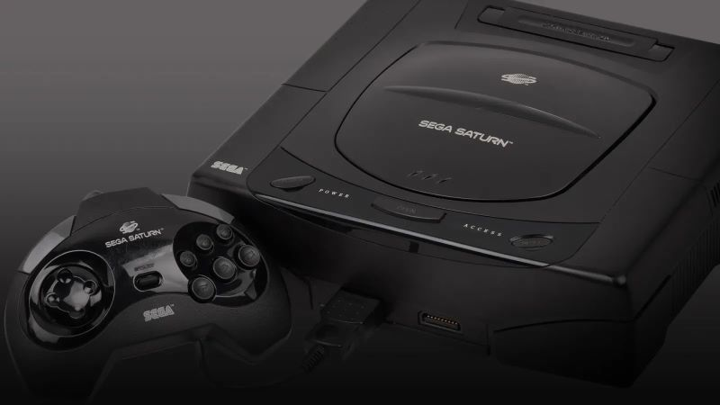
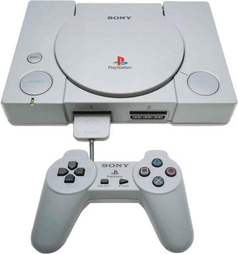

Os jogos de videogame estão presentes na vida de todos. Seja em smartphones, tablets, computadores ou mesmo nos tradicionais consoles antigos!
Antes de traçar um panorama sobre os consoles antigos, é importante entender de onde veio o primeiro videogame. Revelado pelo Dr. Edward Uhler Condon,
na Feira Mundial de Nova York, em 1940 o primeiro jogo de computador conhecido foi baseado no antigo jogo matemático de Nim. Desde então, passamos pelo Atari,
Super Nintendo, Nintendo 67 até chegarmos ao atual PlayStation e Xbox.
Existem consoles antigos que marcaram épocas e gerações, como o Magnavox Odyssey, Atari, Master System, Nintendo 64 e PlayStation. Esses são chamados
consoles icônicos e possuem um alto valor agregado devido à sua história de sucesso! Muitos destes, inclusive, são amplamente procurados por colecionadores pelo mundo.
Agora que você conhece um pouco mais sobre a história dos videogames, que tal acompanhar a trajetória dos consoles antigos mais icônicos de todos os tempos?
O Magnavox Odyssey foi um console antigo composto um circuito de tubo a vácuo que podia ser conectado a um aparelho de televisão e permitia que dois usuários controlassem cubos que se perseguiam na tela. Ele podia ser programado para uma variedade de jogos, incluindo pingue-pongue, damas e quatro jogos esportivos.

Em 1972, a Atari tornou-se a primeira empresa de jogos de referência para uma comunidade de jogos em grande escala. Em 1977, a empresa lançou o Atari VCS.
Quando foi lançado, o Atari VCS foi projetado para jogar apenas 10 jogos de desafio simples. No entanto, o console inclui um slot externo onde os cartuchos de jogos podem ser conectados.
Em 1980, o lançamento do Space Invaders significou uma nova era de jogos e de vendas, disparando para 2 milhões de unidades apenas no primeiro ano.
Ao longo do início da década de 1980, a Sega fez várias tentativas de transferir sua experiência em arcade para o mercado de consoles domésticos – e o Master System foi o mais bem-sucedido.
Mais poderoso e com uma paleta de cores mais completa do que o poderoso Nintendo Entertainment System (NES), a máquina de oito bits ostentou conversões de arcade decentes, mas é mais lembrada
por seus jogos como Alex Kidd in Miracle World e Sonic the Hedgehog.
Em 1995, a Sega lançou na América do Norte seu sistema Saturn, o primeiro console de 32 bits que reproduzia jogos em CDs em vez de cartuchos, cinco meses antes do previsto. Os estúdios Sega triunfaram com jogos como Virtua Fighter, Nights into Dreams e Sega Rally, enquanto sua infinidade de jogos de tiro e luta surpreenderam os jogadores hardcore.

Desenvolvido em 1996, em conjunto com a especialista em supercomputadores Silicon Graphics Inc, e originalmente com o codinome de Project Reality, o N64 era contraditório por
ainda usar cartuchos, por outro lado, era inovador no uso de um joystick analógico para permitir movimentos 3D precisos.
Isso, é claro, levou ao Super Mario 64, jogo que define a época, mas este console antigo viu muitos outros clássicos, incluindo GoldenEye, Banjo-Kazooie, Wave Race 64 e Legend of Zelda: Ocarina of Time.
Em 1993, a Sony não conseguiu entrar na indústria de consoles por meio de colaborações com a Sega e a Nintendo. Então, a empresa projetou uma arquitetura poderosa, mas fácil de desenvolver. O console resultante dominou a década de 1990 com títulos como Tekken, Gran Turismo e Tony Hawk’s Pro Skater.

Foi o primeiro console antigo pronto para internet do mundo, em 2000. O Dreamcast veio com um modem embutido de 56 Kbps e uma cópia do último navegador PlanetWeb, tornando os jogos
baseados na internet uma parte central de sua configuração, em vez de apenas um complemento peculiar usado por uma minoria de usuários.
O Dreamcast foi um sistema verdadeiramente revolucionário e o primeiro dispositivo centrado na rede a ganhar popularidade. No entanto, também foi um grande fracasso,
que efetivamente pôs fim ao legado do console da Sega.